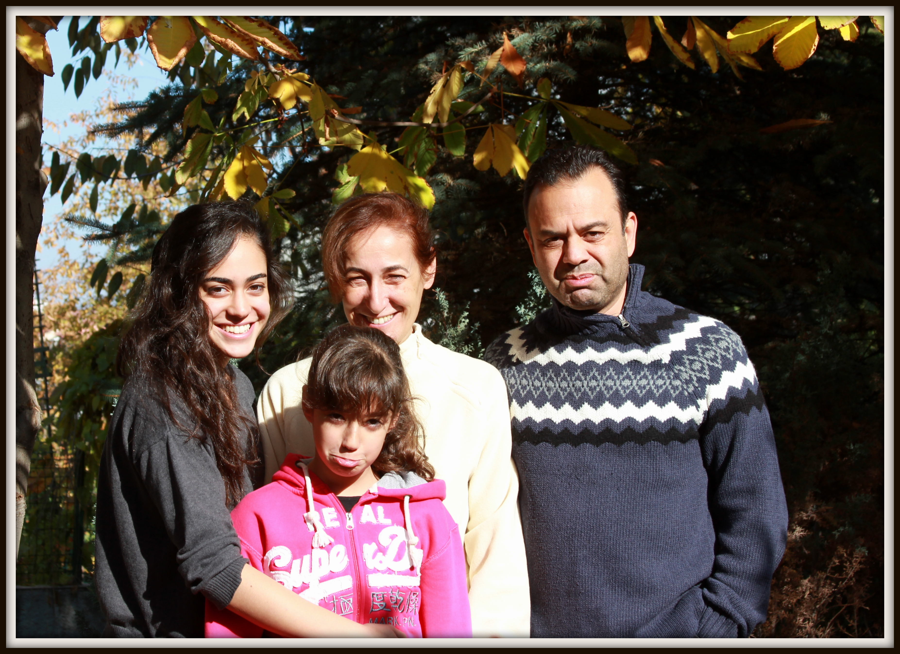
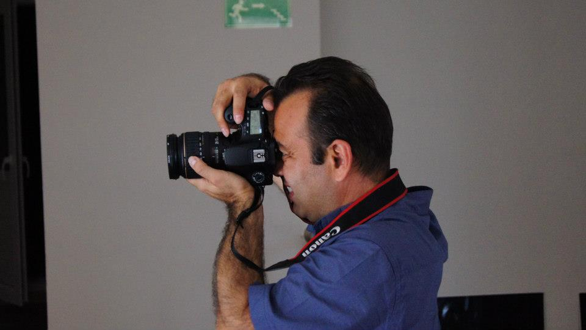

Erhan Yenigun's Portfolio
God made mud. God got lonesome. So God said to some of the mud, "Sit up!" "See all I've made," said God, "the hills, the sea, the sky, the stars."
And I was some of the mud that got to sit up and look around. Lucky me, lucky mud.
I, mud, sat up and saw what a nice job God had done. Nice going, God.
Nobody but you could have done it, God! I certainly couldn't have.
I feel very unimportant compared to You. The only way I can feel the least bit important is to think of all the mud that didn't even get to sit up and look around.
I got so much, and most mud got so little. Thank you for the honor!
Now mud lies down again and goes to sleep. What memories for mud to have! What interesting other kinds of sitting-up mud I met! I loved everything I saw! Good night.
I will go to heaven now. I can hardly wait.
To find out for certain what my wampeter was...
And who was in my karass...
And all the good things our karass did for you.
Amen.
-Kurt Vonnegut, Cat’s Cradle

About Me
I am a electronics engineer with many years of experience in Telecommunication sector who loves to codeing as well. As a father of two, I enjoy time with my family, reading books, watching movies, and traveling. I am also an amathor photographer
I am a graduate of The Tech Academy’s Software Developer Boot Camp, and trained and experienced in the following web and programming languages: HTML, CSS, JavaScript, SQL, C# and more.
You can contact me from Here
My Music
Music has been a lifelong passion of mine, and I enjoy playing both classical guitar and clarinet. I am particularly drawn to classical, jazz, and Turkish music, as each offers unique expressions of emotion and technical depth.
Playing these instruments allows me to explore different styles and cultures while continuously improving my skills. Whether performing a classical piece, improvising in jazz, or embracing the rich melodies of Turkish music, I find great joy in connecting with music on a deeper level.
Visit my
Music Page

My Photo
Photography has been a passion of mine for years, and I hold a college degree in the field. I have attended street photography workshops to refine my skills in capturing candid moments and the essence of everyday life.
Through my Instagram page, I share my work, showcasing my perspective on the world through composition, lighting, and storytelling. Photography allows me to blend creativity with technical knowledge, continuously exploring new ways to express emotions and narratives through images.
Visit my
Photo Page
My Books
Reading has always been one of my greatest passions, and I enjoy exploring books across all genres, though I have a special love for classics. I find immense joy in immersing myself in rich narratives, thought-provoking ideas, and timeless literary works.
One of my favorite authors is Haruki Murakami, whose storytelling blends surrealism with deep emotional themes. Books provide me with endless inspiration, new perspectives, and a deeper understanding of different cultures, histories, and philosophies.
Visit my
Books Page
My Movies
Music has been a lifelong passion of mine, and I enjoy playing both classical guitar and clarinet. I am particularly drawn to classical, jazz, and Turkish music, as each offers unique expressions of emotion and technical depth.
Playing these instruments allows me to explore different styles and cultures while continuously improving my skills. Whether performing a classical piece, improvising in jazz, or embracing the rich melodies of Turkish music, I find great joy in connecting with music on a deeper level.
Visit my
Movies Page